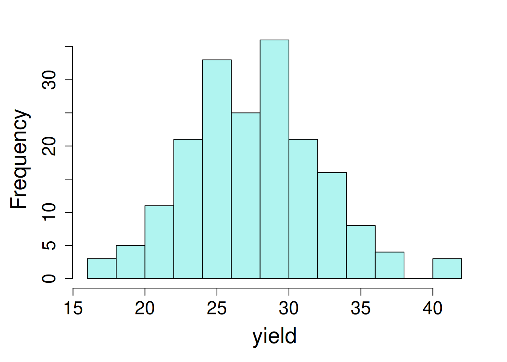
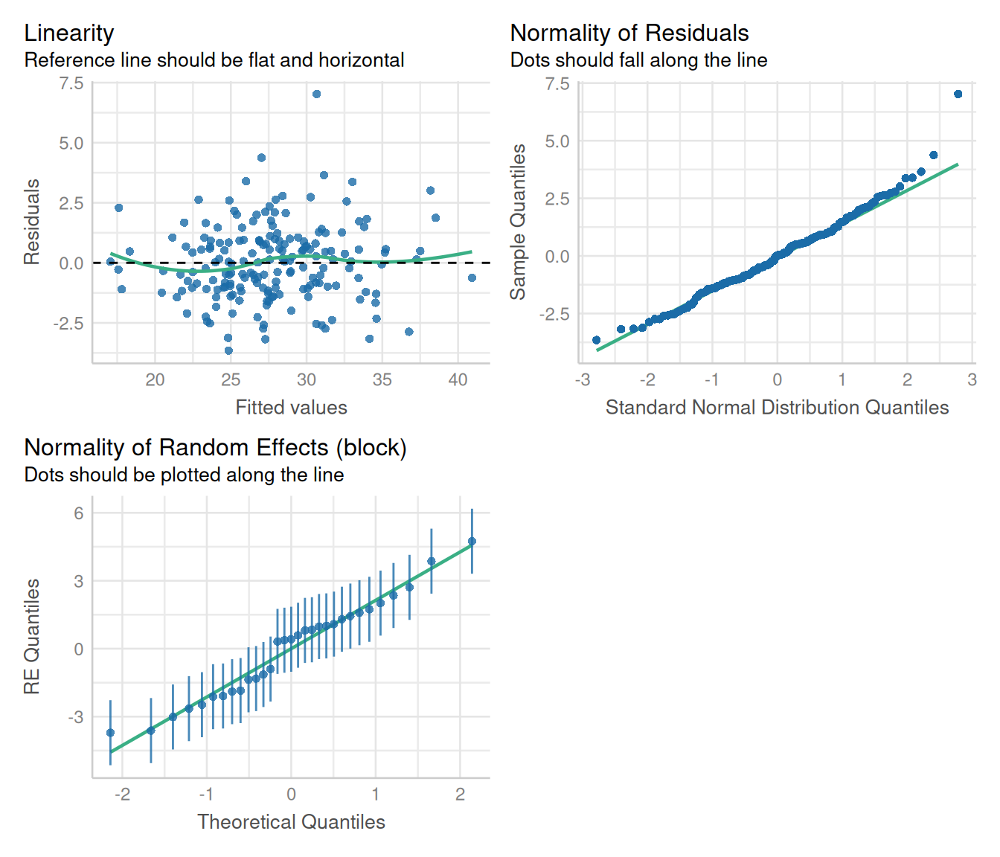
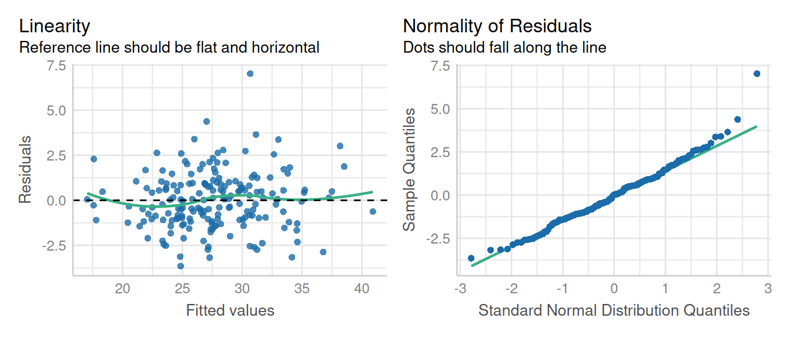
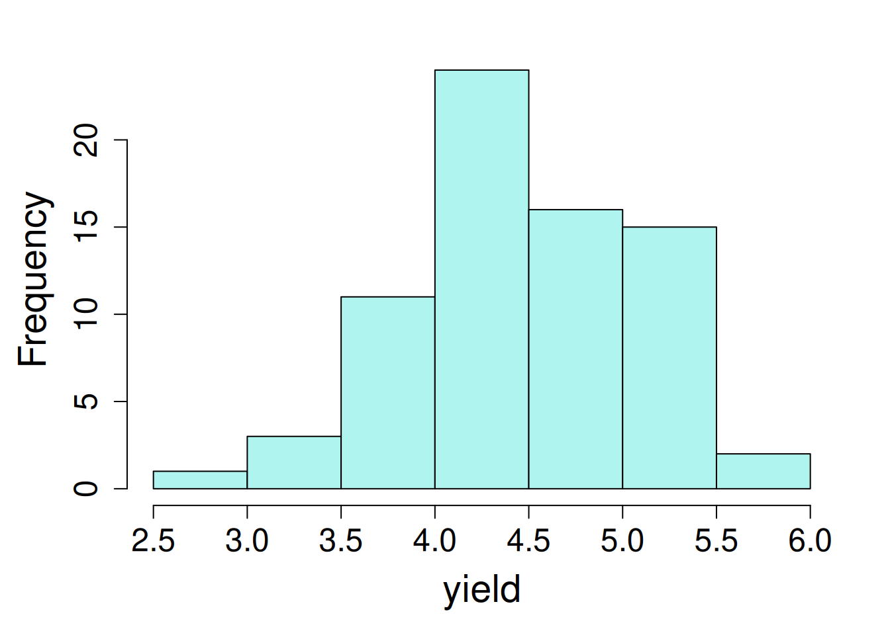
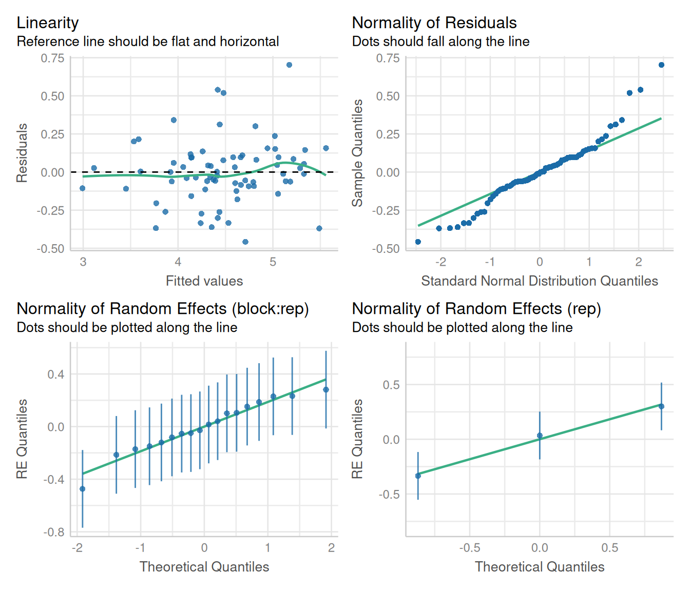
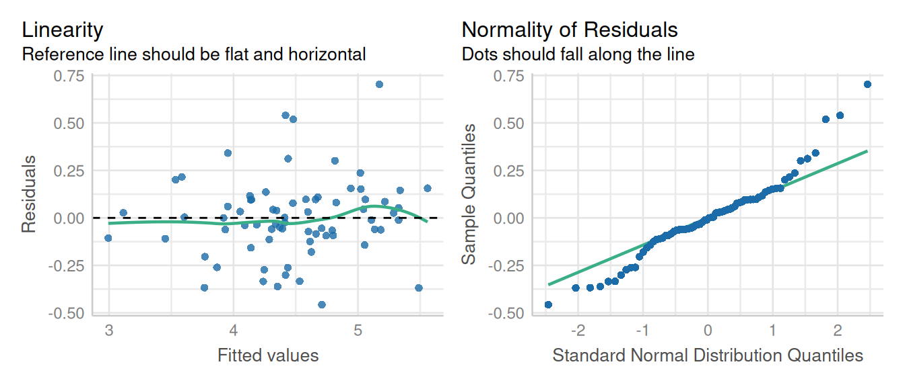

library(lme4); library(lmerTest); library(emmeans)
library(dplyr); library(broom.mixed); library(performance)10 Incomplete Block Design
10.1 Background
The block design described in Chapter 4 was complete, meaning that each block contained each treatment level at least once. In practice, it may not be possible or advisable to include all treatments in each block, either due to limitations in treatment availability (e.g. limited seed stocks) or the block size becomes too large to serve its original goals of controlling for spatial variation.
In such cases, randomized incomplete block designs (IBD) can be used. Incomplete block designs break the experiment into many smaller incomplete blocks that are nested within standard RCBD-style blocks and assigns a subset of the treatment levels to each incomplete block. There are several different approaches (Yates 1936) for how to assign treatment levels to incomplete blocks and these designs impact the final statistical analysis (and if all treatments included in the experimental design are estimable). [^icbd-1] [^icbd-2] An excellent description of incomplete block design is provided in ANOVA and Mixed Models by Lukas Meier.
Incomplete block designs are grouped into two groups: (1) balanced lattice designs; and (2) partially balanced (also commonly called alpha-lattice) designs. Balanced IBD designs have been previously called “lattice designs” [need refs], but we are not using that term to avoid confusion with alpha-lattice designs, a term that is commonly used.
In alpha-lattice design, the blocks are grouped into complete replicates. These designs are also termed as “resolvable incomplete block designs” or “partially balanced incomplete block designs” (Patterson and Williams 1976). This design has been more commonly used instead of balanced IBD because of it’s practicability, flexibility, and versatility.
10.1.1 Statistical Model
The statistical model for a balanced incomplete block design is:
\[y_{ij} = \mu + \alpha_i + \beta_j + \epsilon_{ij}\]
Where:
\(\mu\) = overall experimental mean
\(\alpha\) = treatment effects (fixed)
\(\beta\) = block effects (random)
\(\epsilon\) = error terms
\[ \epsilon \sim N(0, \sigma)\]
\[ \beta \sim N(0, \sigma_b)\]
There are few key points that we need to keep in mind while designing incomplete block experiments:
- A drawback of this design is that block effect and treatment effects are confounded.
- To remove the block effects, it is better compare treatments within a block.
- No treatment should appear twice in any block as it contributes nothing to within block comparisons.
The balanced incomplete block designs are guided by strict principles and guidelines including: the number of treatments must be a perfect square (e.g. 25, 36, and so on), and number of replicates must be equal to number of blocks + 1.
Note on Sums of Squares
Because the blocks are incomplete, the type I and type III sums of squares will be different even when there is no missing data from a trail. That is because the missing treatments in each block represent missing observations (even though they are not missing ‘at random’).
10.2 Examples Analyses
10.2.1 Balanced Incomplete Block Design
We will demonstrate an example data set designed in a balanced incomplete block design. First, load the libraries required for analysis.
library(nlme); library(broom.mixed); library(emmeans)
library(dplyr); library(performance)The data used for this example analysis was extracted from the agridat package. This example is comprised of soybean balanced incomplete block experiment.
dat <- read.csv(here::here("data", "incblock.csv"))| block | blocking unit |
| gen | genotype (variety) factor |
| row | row position for each plot |
| col | column position for each plot |
| yield | grain yield in bu/ac |
10.2.1.1 Data integrity checks
- Check structure of the data
We will start inspecting the data set firstly by looking at the class of each variable:
str(dat)'data.frame': 186 obs. of 6 variables:
$ X : int 1 2 3 4 5 6 7 8 9 10 ...
$ block: chr "B01" "B02" "B03" "B04" ...
$ gen : chr "G24" "G15" "G20" "G18" ...
$ yield: num 29.8 24.2 30.5 20 35.2 25 23.6 23.6 29.3 25.5 ...
$ row : int 42 36 30 24 18 12 6 42 36 30 ...
$ col : int 1 1 1 1 1 1 1 2 2 2 ...The variables we need for the model are block, gen, and yield. The block and gen are classified as factor variables and yield is numeric. Therefore, we do not need to change class of any of the required variables.
- Inspect the independent variables
Next, let’s check the independent variables. We can look at this by running a cross tabulations among block and gen factors.
agg_tbl <- dat %>% group_by(gen) %>%
summarise(total_count=n(),
.groups = 'drop')
agg_tbl# A tibble: 31 × 2
gen total_count
<chr> <int>
1 G01 6
2 G02 6
3 G03 6
4 G04 6
5 G05 6
6 G06 6
7 G07 6
8 G08 6
9 G09 6
10 G10 6
# ℹ 21 more rowsagg_df <- aggregate(dat$gen, by=list(dat$block), FUN=length)
agg_df Group.1 x
1 B01 6
2 B02 6
3 B03 6
4 B04 6
5 B05 6
6 B06 6
7 B07 6
8 B08 6
9 B09 6
10 B10 6
11 B11 6
12 B12 6
13 B13 6
14 B14 6
15 B15 6
16 B16 6
17 B17 6
18 B18 6
19 B19 6
20 B20 6
21 B21 6
22 B22 6
23 B23 6
24 B24 6
25 B25 6
26 B26 6
27 B27 6
28 B28 6
29 B29 6
30 B30 6
31 B31 6There are 31 varieties (levels of gen) and it is perfectly balanced, with exactly one observation per treatment per block.
- Check the extent of missing data
We can calculate the sum of missing values in variables in this data set to evaluate the extent of missing values in different variables:
colSums(is.na(dat)) X block gen yield row col
0 0 0 0 0 0 No missing data!
- Inspect the dependent variable
Last, let’s plot a histogram of the dependent variable. This is a quick check before analysis to see if there is any strong deviation in values.

hist(dat$yield, main = "", xlab = "yield", col = "turquoise")Response variable values fall within expected range, with few extreme values on right tail. This data set is ready for analysis!
10.2.1.2 Model Building
We will be evaluating the response of yield as affected by gen (fixed effect) and block (random effect). 1
1 Please note that incomplete block effect can be analyzed as a fixed (intra-block analysis) or a random (inter-block analysis) effect. When we consider block as a random effect, the mean values of a block also contain information about the treatment effects.
model_icbd <- lmer(yield ~ gen + (1|block),
data = dat,
na.action = na.exclude)
tidy(model_icbd)# A tibble: 33 × 8
effect group term estimate std.error statistic df p.value
<chr> <chr> <chr> <dbl> <dbl> <dbl> <dbl> <dbl>
1 fixed <NA> (Intercept) 24.6 0.922 26.7 153. 2.30e-59
2 fixed <NA> genG02 2.40 1.17 2.06 129. 4.17e- 2
3 fixed <NA> genG03 8.04 1.17 6.88 129. 2.31e-10
4 fixed <NA> genG04 2.37 1.17 2.03 129. 4.42e- 2
5 fixed <NA> genG05 1.60 1.17 1.37 129. 1.73e- 1
6 fixed <NA> genG06 7.39 1.17 6.32 129. 3.82e- 9
7 fixed <NA> genG07 -0.419 1.17 -0.359 129. 7.20e- 1
8 fixed <NA> genG08 3.04 1.17 2.60 129. 1.04e- 2
9 fixed <NA> genG09 4.84 1.17 4.14 129. 6.22e- 5
10 fixed <NA> genG10 -0.0429 1.17 -0.0367 129. 9.71e- 1
# ℹ 23 more rowsmodel_icbd1 <- lme(yield ~ gen,
random = ~ 1|block,
data = dat,
na.action = na.exclude)
tidy(model_icbd1)# A tibble: 33 × 8
effect group term estimate std.error df statistic p.value
<chr> <chr> <chr> <dbl> <dbl> <dbl> <dbl> <dbl>
1 fixed <NA> (Intercept) 24.6 0.922 125 26.7 2.10e-53
2 fixed <NA> genG02 2.40 1.17 125 2.06 4.18e- 2
3 fixed <NA> genG03 8.04 1.17 125 6.88 2.54e-10
4 fixed <NA> genG04 2.37 1.17 125 2.03 4.43e- 2
5 fixed <NA> genG05 1.60 1.17 125 1.37 1.73e- 1
6 fixed <NA> genG06 7.39 1.17 125 6.32 4.11e- 9
7 fixed <NA> genG07 -0.419 1.17 125 -0.359 7.20e- 1
8 fixed <NA> genG08 3.04 1.17 125 2.60 1.04e- 2
9 fixed <NA> genG09 4.84 1.17 125 4.14 6.33e- 5
10 fixed <NA> genG10 -0.0429 1.17 125 -0.0367 9.71e- 1
# ℹ 23 more rows10.2.1.3 Check Model Assumptions
Let’s verify the assumption of linear mixed models including normal distribution and constant variance of residuals.
check_model(model_icbd, check = c('normality', 'linearity'))
check_model(model_icbd1, check = c('normality', 'linearity'))
10.2.1.4 Inference
We can extract information about ANOVA using anova().
anova(model_icbd, type = "1")Type I Analysis of Variance Table with Satterthwaite's method
Sum Sq Mean Sq NumDF DenDF F value Pr(>F)
gen 1901.1 63.369 30 129.06 17.675 < 2.2e-16 ***
---
Signif. codes: 0 '***' 0.001 '**' 0.01 '*' 0.05 '.' 0.1 ' ' 1anova(model_icbd1, type = "sequential") numDF denDF F-value p-value
(Intercept) 1 125 4042.016 <.0001
gen 30 125 17.675 <.0001Let’s look at the estimated marginal means of yield for each variety (gen).
emmeans(model_icbd, ~ gen) gen emmean SE df lower.CL upper.CL
G01 24.6 0.923 153 22.7 26.4
G02 27.0 0.923 153 25.2 28.8
G03 32.6 0.923 153 30.8 34.4
G04 26.9 0.923 153 25.1 28.8
G05 26.2 0.923 153 24.4 28.0
G06 32.0 0.923 153 30.1 33.8
G07 24.2 0.923 153 22.3 26.0
G08 27.6 0.923 153 25.8 29.4
G09 29.4 0.923 153 27.6 31.2
G10 24.5 0.923 153 22.7 26.4
G11 27.1 0.923 153 25.2 28.9
G12 29.3 0.923 153 27.4 31.1
G13 29.9 0.923 153 28.1 31.8
G14 24.2 0.923 153 22.4 26.1
G15 26.1 0.923 153 24.3 27.9
G16 25.9 0.923 153 24.1 27.8
G17 19.7 0.923 153 17.9 21.5
G18 25.7 0.923 153 23.9 27.5
G19 29.0 0.923 153 27.2 30.9
G20 33.2 0.923 153 31.3 35.0
G21 31.1 0.923 153 29.3 32.9
G22 25.2 0.923 153 23.3 27.0
G23 29.8 0.923 153 28.0 31.6
G24 33.6 0.923 153 31.8 35.5
G25 27.0 0.923 153 25.2 28.8
G26 27.1 0.923 153 25.3 29.0
G27 23.8 0.923 153 22.0 25.6
G28 26.5 0.923 153 24.6 28.3
G29 24.8 0.923 153 22.9 26.6
G30 36.2 0.923 153 34.4 38.0
G31 27.1 0.923 153 25.3 28.9
Degrees-of-freedom method: kenward-roger
Confidence level used: 0.95 emmeans(model_icbd1, ~ gen) gen emmean SE df lower.CL upper.CL
G01 24.6 0.922 30 22.7 26.5
G02 27.0 0.922 30 25.1 28.9
G03 32.6 0.922 30 30.7 34.5
G04 26.9 0.922 30 25.1 28.8
G05 26.2 0.922 30 24.3 28.1
G06 32.0 0.922 30 30.1 33.8
G07 24.2 0.922 30 22.3 26.0
G08 27.6 0.922 30 25.7 29.5
G09 29.4 0.922 30 27.5 31.3
G10 24.5 0.922 30 22.6 26.4
G11 27.1 0.922 30 25.2 28.9
G12 29.3 0.922 30 27.4 31.1
G13 29.9 0.922 30 28.1 31.8
G14 24.2 0.922 30 22.4 26.1
G15 26.1 0.922 30 24.2 28.0
G16 25.9 0.922 30 24.0 27.8
G17 19.7 0.922 30 17.8 21.6
G18 25.7 0.922 30 23.8 27.6
G19 29.0 0.922 30 27.2 30.9
G20 33.2 0.922 30 31.3 35.0
G21 31.1 0.922 30 29.2 33.0
G22 25.2 0.922 30 23.3 27.1
G23 29.8 0.922 30 27.9 31.7
G24 33.6 0.922 30 31.8 35.5
G25 27.0 0.922 30 25.1 28.9
G26 27.1 0.922 30 25.3 29.0
G27 23.8 0.922 30 21.9 25.7
G28 26.5 0.922 30 24.6 28.4
G29 24.8 0.922 30 22.9 26.6
G30 36.2 0.922 30 34.3 38.1
G31 27.1 0.922 30 25.2 29.0
Degrees-of-freedom method: containment
Confidence level used: 0.95 10.2.2 Partially Balanced IBD (Alpha Lattice Design)
The statistical model for partially balanced design includes:
\[y_{ij(l)} = \mu + \alpha_i + \beta_{i(l)} + \tau_j + \epsilon_{ij(l)}\]
Where:
\(\mu\) = overall experimental mean
\(\alpha\) = replicate effect (random)
\(\beta\) = incomplete block effect (random)
\(\tau\) = treatment effect (fixed)
\(\epsilon_{ij(l)}\) = intra-block residual
The data used in this example is published in Cyclic and Computer Generated Designs (John and Williams 1995). The trial was laid out in an alpha lattice design. This trial data had 24 genotypes (“gen”), 6 incomplete blocks, each replicated 3 times.
Let’s start analyzing this example first by loading the required libraries for linear mixed models:
library(lme4); library(lmerTest); library(emmeans)
library(dplyr); library(broom.mixed); library(performance)library(nlme); library(broom.mixed); library(emmeans)
library(dplyr); library(performance)Let’s import a data with partial balanced icomplete design. This data was obtained from the agridat package.
data1 <- read.csv(here::here("data", "partial_incblock.csv"))| block | incomplete blocking unit |
| gen | genotype (variety) factor |
| row | row position for each plot |
| col | column position for each plot |
| yield | grain yield in tonnes/ha |
10.2.2.1 Data integrity checks
- Check structure of the data
Let’s look into the structure of the data first to verify the class of the variables.
str(data1)'data.frame': 72 obs. of 8 variables:
$ X : int 1 2 3 4 5 6 7 8 9 10 ...
$ plot : int 1 2 3 4 5 6 7 8 9 10 ...
$ rep : chr "R1" "R1" "R1" "R1" ...
$ block: chr "B1" "B1" "B1" "B1" ...
$ gen : chr "G11" "G04" "G05" "G22" ...
$ yield: num 4.12 4.45 5.88 4.58 4.65 ...
$ row : int 1 2 3 4 5 6 7 8 9 10 ...
$ col : int 1 1 1 1 1 1 1 1 1 1 ...Here, rep, block and gen are character and yield as a integer. We can continue with this.
- Inspect the independent variables
Next step is to evaluate the independent variables. First, check the number of treatments per replication (each treatment should be replicated 3 times).
agg_tbl <- data1 %>% group_by(gen) %>%
summarise(total_count=n(),
.groups = 'drop')
agg_tbl# A tibble: 24 × 2
gen total_count
<chr> <int>
1 G01 3
2 G02 3
3 G03 3
4 G04 3
5 G05 3
6 G06 3
7 G07 3
8 G08 3
9 G09 3
10 G10 3
# ℹ 14 more rowsThis looks balanced, as expected. Also, let’s have a look at the number of times each treatment appear per block.
agg_blk <- aggregate(data1$gen, by=list(data1$block), FUN=length)
agg_blk Group.1 x
1 B1 12
2 B2 12
3 B3 12
4 B4 12
5 B5 12
6 B6 1212 treatments randomly appear in incomplete block. Each incomplete block has same number of treatments.
- Check the extent of missing data
colSums(is.na(data1)) X plot rep block gen yield row col
0 0 0 0 0 0 0 0 No missing values in data!
- Inspect the dependent variable
Before fitting the model, it’s a good idea to look at the distribution of dependent variable, yield.

hist(data1$yield, main = "", xlab = "yield", col = "turquoise")The response variables seems to follow a normal distribution curve, with few values on extreme lower and higher ends.
10.2.2.2 Model Building
We are evaluating the response of yield to Gen (fixed effect) and rep and block as a random effect.
mod_alpha <- lmer(yield ~ gen + (1|rep/block),
data = data1,
na.action = na.exclude)
tidy(mod_alpha)# A tibble: 27 × 8
effect group term estimate std.error statistic df p.value
<chr> <chr> <chr> <dbl> <dbl> <dbl> <dbl> <dbl>
1 fixed <NA> (Intercept) 5.11 0.276 18.5 6.19 0.00000118
2 fixed <NA> genG02 -0.629 0.269 -2.34 38.2 0.0248
3 fixed <NA> genG03 -1.61 0.268 -6.00 37.7 0.000000590
4 fixed <NA> genG04 -0.618 0.268 -2.30 37.7 0.0269
5 fixed <NA> genG05 -0.0705 0.258 -0.274 34.8 0.786
6 fixed <NA> genG06 -0.571 0.268 -2.13 37.7 0.0398
7 fixed <NA> genG07 -0.997 0.258 -3.87 34.8 0.000457
8 fixed <NA> genG08 -0.580 0.268 -2.16 37.7 0.0370
9 fixed <NA> genG09 -1.61 0.258 -6.21 35.3 0.000000390
10 fixed <NA> genG10 -0.735 0.259 -2.83 35.9 0.00754
# ℹ 17 more rowsmod_alpha1 <- lme(yield ~ gen,
random = ~ 1|rep/block,
data = data1,
na.action = na.exclude)
tidy(mod_alpha1)Warning in tidy.lme(mod_alpha1): ran_pars not yet implemented for multiple
levels of nesting# A tibble: 24 × 7
effect term estimate std.error df statistic p.value
<chr> <chr> <dbl> <dbl> <dbl> <dbl> <dbl>
1 fixed (Intercept) 5.11 0.276 31 18.5 2.63e-18
2 fixed genG02 -0.629 0.269 31 -2.34 2.61e- 2
3 fixed genG03 -1.61 0.268 31 -6.00 1.23e- 6
4 fixed genG04 -0.618 0.268 31 -2.30 2.81e- 2
5 fixed genG05 -0.0705 0.258 31 -0.274 7.86e- 1
6 fixed genG06 -0.571 0.268 31 -2.13 4.12e- 2
7 fixed genG07 -0.997 0.258 31 -3.87 5.23e- 4
8 fixed genG08 -0.580 0.268 31 -2.16 3.84e- 2
9 fixed genG09 -1.61 0.258 31 -6.21 6.71e- 7
10 fixed genG10 -0.735 0.259 31 -2.83 8.05e- 3
# ℹ 14 more rows10.2.2.3 Check Model Assumptions
Let’s verify the assumption of linear mixed models including normal distribution and constant variance of residuals.
check_model(mod_alpha, check = c('normality', 'linearity'))
check_model(mod_alpha1, check = c('normality', 'linearity'))
Here a little skewness is present normality of residuals, but that’s not a major deviation in the model assumptions.
10.2.2.4 Inference
Let’s look at the ANOVA table using anova() from lmer and lme models, respectively.
anova(mod_alpha, type = "1")Type I Analysis of Variance Table with Satterthwaite's method
Sum Sq Mean Sq NumDF DenDF F value Pr(>F)
gen 10.679 0.46429 23 34.902 5.4478 4.229e-06 ***
---
Signif. codes: 0 '***' 0.001 '**' 0.01 '*' 0.05 '.' 0.1 ' ' 1anova(mod_alpha1, type = "sequential") numDF denDF F-value p-value
(Intercept) 1 31 470.9507 <.0001
gen 23 31 5.4478 <.0001Let’s look at the estimated marginal means of yield for each variety (gen).
emmeans(mod_alpha, ~ gen) gen emmean SE df lower.CL upper.CL
G01 5.11 0.279 6.20 4.43 5.78
G02 4.48 0.279 6.20 3.80 5.15
G03 3.50 0.279 6.20 2.82 4.18
G04 4.49 0.279 6.20 3.81 5.17
G05 5.04 0.278 6.19 4.36 5.71
G06 4.54 0.278 6.19 3.86 5.21
G07 4.11 0.279 6.20 3.43 4.79
G08 4.53 0.279 6.20 3.85 5.20
G09 3.50 0.278 6.19 2.83 4.18
G10 4.37 0.279 6.20 3.70 5.05
G11 4.28 0.279 6.20 3.61 4.96
G12 4.76 0.279 6.20 4.08 5.43
G13 4.76 0.278 6.19 4.08 5.43
G14 4.78 0.278 6.19 4.10 5.45
G15 4.97 0.278 6.19 4.29 5.65
G16 4.73 0.279 6.20 4.05 5.41
G17 4.60 0.278 6.19 3.93 5.28
G18 4.36 0.279 6.20 3.69 5.04
G19 4.84 0.278 6.19 4.16 5.52
G20 4.04 0.278 6.19 3.36 4.72
G21 4.80 0.278 6.19 4.12 5.47
G22 4.53 0.278 6.19 3.85 5.20
G23 4.25 0.278 6.19 3.58 4.93
G24 4.15 0.279 6.20 3.48 4.83
Degrees-of-freedom method: kenward-roger
Confidence level used: 0.95 emmeans(mod_alpha1, ~ gen) gen emmean SE df lower.CL upper.CL
G01 5.11 0.276 2 3.92 6.30
G02 4.48 0.276 2 3.29 5.67
G03 3.50 0.276 2 2.31 4.69
G04 4.49 0.276 2 3.30 5.68
G05 5.04 0.276 2 3.85 6.22
G06 4.54 0.276 2 3.35 5.72
G07 4.11 0.276 2 2.92 5.30
G08 4.53 0.276 2 3.34 5.72
G09 3.50 0.276 2 2.31 4.69
G10 4.37 0.276 2 3.19 5.56
G11 4.28 0.276 2 3.10 5.47
G12 4.76 0.276 2 3.57 5.94
G13 4.76 0.276 2 3.57 5.95
G14 4.78 0.276 2 3.59 5.96
G15 4.97 0.276 2 3.78 6.16
G16 4.73 0.276 2 3.54 5.92
G17 4.60 0.276 2 3.42 5.79
G18 4.36 0.276 2 3.17 5.55
G19 4.84 0.276 2 3.65 6.03
G20 4.04 0.276 2 2.85 5.23
G21 4.80 0.276 2 3.61 5.98
G22 4.53 0.276 2 3.34 5.72
G23 4.25 0.276 2 3.06 5.44
G24 4.15 0.276 2 2.97 5.34
Degrees-of-freedom method: containment
Confidence level used: 0.95